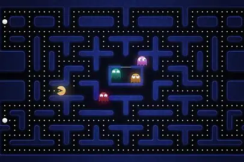

watani nació en el distrito de Meguro de Tokio, Japón, el 25 de enero de 1955. Mientras estaba en el jardín de infancia, él y su familia se mudaron a la región de Tōhoku en Japón después de que su padre consiguiera un trabajo como ingeniero para Japan Broadcasting Corporation. Después de convertirse en estudiante de secundaria, Iwatani regresó a Tokio y se graduó de la Escuela secundaria de la Universidad Metropolitana de Tokio, antes de graduarse de la Facultad de Ingeniería de la Universidad de Tokai. Iwatani fue autodidacta en informática sin ninguna formación formal en programación o diseño gráfico. A menudo llenaba sus libros de texto escolares con manga disperso, que afirma que tuvo una gran influencia en los diseños de personajes de sus juegos.
